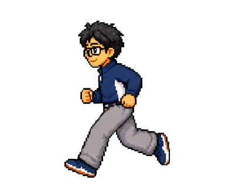
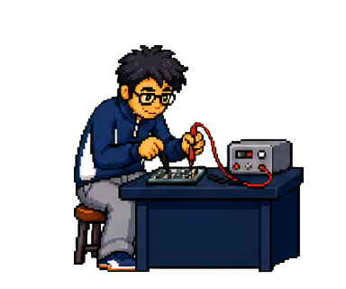
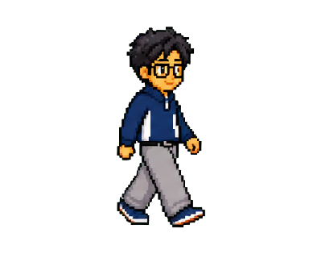

Oak scene studies
Six web-ready 12-frame loops. The production WebP files keep transparency; this page provides a dark backing for review.



Six web-ready 12-frame loops. The production WebP files keep transparency; this page provides a dark backing for review.


